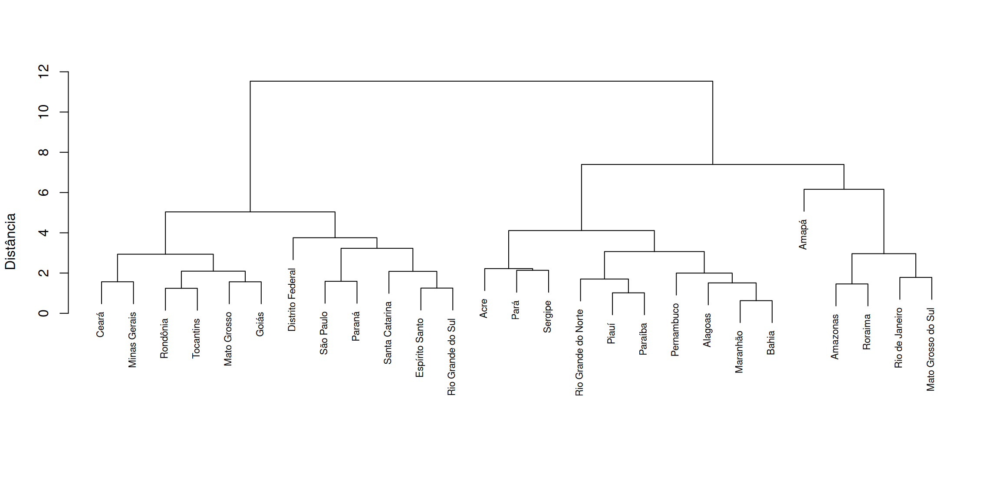
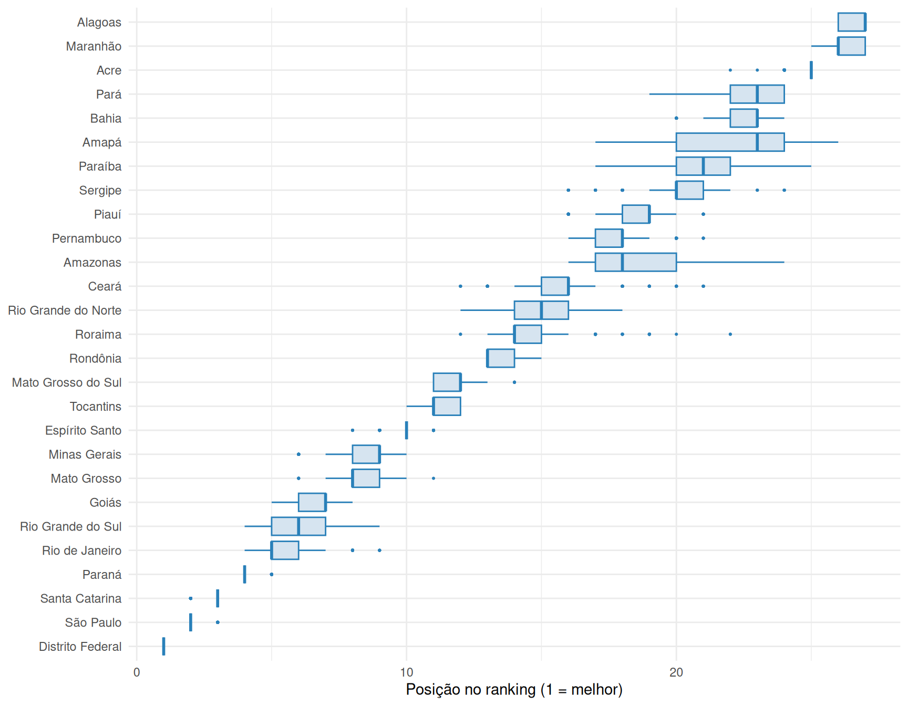
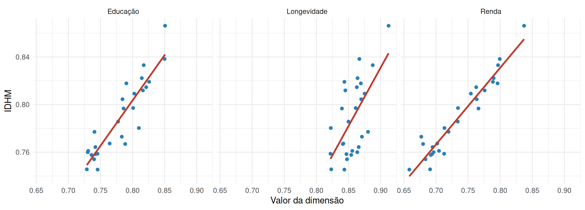
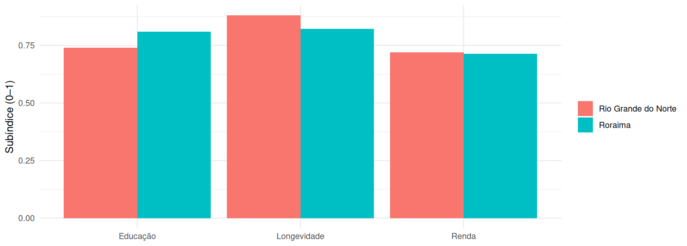
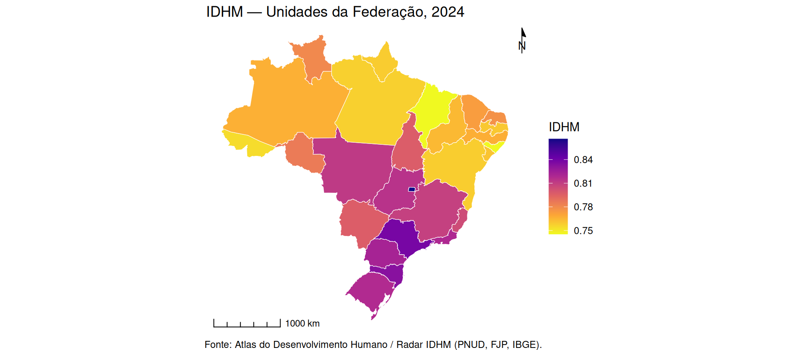
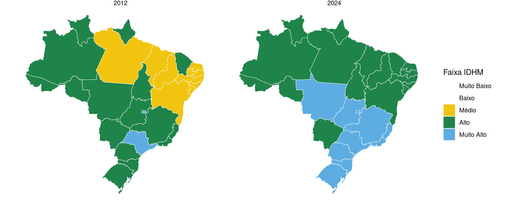
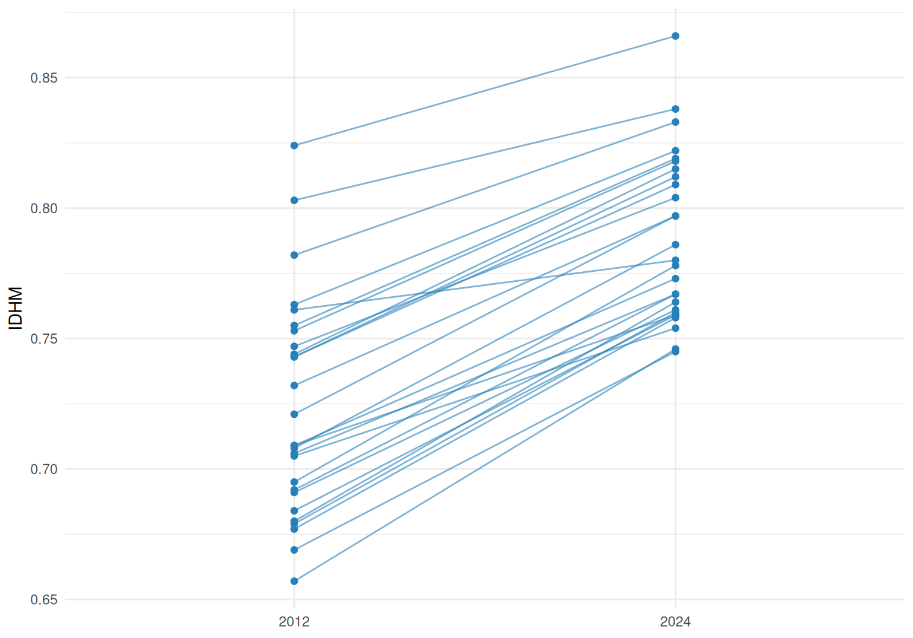

setwd("C:/Users/voce/Documents/workshop-idhm") # ajuste para a SUA pasta
list.files("data") # confere: o .xlsx e o .geojson devem aparecerWorkshop DEMOPOP · roteiro de aula em R
2026-06-26
Baixe o material em demopop.github.io/indicadores-sinteticos: o script tutorial.R e os dados (data/). Organize numa pasta de trabalho:
workshop-idhm/
├── tutorial.R
└── data/
├── adh_radar_base_2012_2024.xlsx
└── uf_brasil.geojsonE aponte o R para essa pasta (o working directory), para que os caminhos data/... funcionem:
Em 2024, o IDHM do Brasil alcançou 0,805 — situando o país, pela primeira vez, na faixa de “muito alto desenvolvimento humano”, ante 0,744 em 2012.
Algo a comemorar — mas que reabre uma pergunta analítica, e é ela que conduz este workshop:
Um valor-síntese elevado é compatível com desigualdades profundas — entre territórios, sexos e raças? Aquilo que o número agrega, ele também esconde.
A informação estatística se organiza em níveis crescentes de agregação:
\[\text{dado bruto} \to \text{estatística (total, } \%, \text{razão, taxa, média)} \to \text{indicador} \to \text{índice}\]
Para medir um conceito abstrato, descemos uma escada:
\[\text{conceito} \to \text{dimensões} \to \text{definição operacional (indicadores)}\]
Um paradoxo: ao operacionalizar, eu me aproximo do conceito (ganho uma medida) e, ao mesmo tempo, dele me distancio — toda síntese perde informação.
E cada delimitação embute premissas que, por definição, não são testáveis. Guardem isto: é a mensagem final.
Na formulação de Mahbub ul Haq, apoiada na abordagem das capacitações de Amartya Sen, o desenvolvimento humano é a ampliação das liberdades e capacidades das pessoas — a possibilidade real de levarem a vida que têm razão para valorizar —, em contraposição à identificação do desenvolvimento com o mero crescimento da renda (PNUD, 1990; Sen, 2000).
O IDHM operacionaliza essa concepção em três dimensões — longevidade, educação e renda —, deixando deliberadamente de fora aspectos como desigualdade, liberdade política e sustentabilidade ambiental.
Pensem no indicador observável que melhor representa cada dimensão:
# c() cria um vetor com os nomes dos pacotes que vamos usar:
# readxl (ler Excel), dplyr/tidyr (manipular tabelas), ggplot2 (gráficos), sf (mapas),
# ggspatial (escala e rosa-dos-ventos nos mapas, Etapa 10)
pacotes <- c("readxl", "dplyr", "tidyr", "ggplot2", "sf", "ggspatial")
# setdiff() devolve os pacotes da lista que ainda NÃO estão instalados...
faltando <- setdiff(pacotes, rownames(installed.packages()))
# ...e, se houver algum faltando, instala-o automaticamente
if (length(faltando) > 0) install.packages(faltando)
# carrega (library) cada pacote da lista; invisible() apenas suprime a saída no console
invisible(lapply(pacotes, library, character.only = TRUE))# read_excel() lê a planilha; sheet = "Total" escolhe a aba. O resultado é guardado
# (com a seta <-, o operador de atribuição do R) no objeto 'radar': uma tabela (data frame)
# com o painel 2012–2024 e vários recortes geográficos
radar <- read_excel("data/adh_radar_base_2012_2024.xlsx", sheet = "Total")
# filter() mantém apenas as linhas que satisfazem as condições (ano = 2024 E recorte = UF);
# '==' testa igualdade (note os dois sinais de igual). Sobram as 27 UFs de 2024
ufs <- filter(radar, ANO == 2024, AGREGACAO == "Unidade da Federação")
# vetor com os códigos das 4 colunas de FLUXO escolar, que reutilizaremos adiante
cols_fluxo <- c("T_FREQ5A6", "T_FUND11A13", "T_FUND15A17", "T_MED18A20")
# glimpse() mostra um resumo das colunas escolhidas. Dentro de ufs[, c(...)], a vírgula
# separa [linhas, colunas]: deixando o lado das linhas vazio, pedimos TODAS as linhas e só
# as colunas listadas
glimpse(ufs[, c("NOME", "ESPVIDA", "T_FUND18M", cols_fluxo, "RDPC", "IDHM")])Rows: 27
Columns: 9
$ NOME <chr> "Rondônia", "Acre", "Amazonas", "Roraima", "Pará", "Amapá", "Tocanti…
$ ESPVIDA <dbl> 76.00, 75.86, 75.48, 74.35, 76.26, 74.32, 76.68, 75.62, 76.96, 77.26…
$ T_FUND18M <dbl> 64.82, 67.18, 74.51, 79.75, 66.73, 75.35, 69.81, 63.05, 59.66, 63.44…
$ T_FREQ5A6 <dbl> 95.64, 93.06, 94.99, 95.84, 98.41, 83.01, 96.06, 98.48, 99.69, 98.54…
$ T_FUND11A13 <dbl> 97.15, 91.52, 92.80, 92.26, 92.34, 92.32, 98.67, 95.05, 96.53, 97.01…
$ T_FUND15A17 <dbl> 82.29, 74.26, 73.77, 72.35, 67.65, 68.18, 80.65, 72.75, 76.97, 86.57…
$ T_MED18A20 <dbl> 65.58, 51.88, 62.91, 65.98, 50.79, 53.05, 67.79, 58.03, 57.86, 65.99…
$ RDPC <dbl> 769.89, 563.00, 550.19, 676.77, 592.77, 674.74, 771.42, 481.46, 603.…
$ IDHM <dbl> 0.786, 0.754, 0.767, 0.780, 0.758, 0.759, 0.797, 0.745, 0.764, 0.773…27 UFs, 2024. Indicadores brutos de cada dimensão — esperança de vida (anos), escolaridade e fluxo (%), renda (R$ constantes) — e o IDHM oficial, nosso gabarito para validar na Etapa 9.
Mais que “imputar ausentes”: é onde o dado bruto se torna apto à análise — crítica de consistência, outliers, ausentes, suavização — e onde se fixam as referências e a polaridade que a normalização usará. Nem toda ausência aparece como NA: valores sentinela (0, −1, 99) podem mascarar dados faltantes.
[1] 27 83# o que importa aqui são os indicadores que ALIMENTAM o índice — não as dezenas de colunas
# da base. Reunimos os 8 num vetor: longevidade, escolaridade, os 4 de fluxo, renda e o
# IDHM oficial (este último para a reprodução na Etapa 9)
cols_calc <- c("ESPVIDA", "T_FUND18M", cols_fluxo, "RDPC", "IDHM")
# is.na() marca como TRUE cada célula vazia; colSums() soma esses TRUE coluna a coluna
# (no R, TRUE conta como 1 e FALSE como 0), dando o nº de ausências por variável.
# ufs[, cols_calc] restringe a checagem a essas 8 colunas
na_por_coluna <- colSums(is.na(ufs[, cols_calc]))
# filtra o resultado para exibir apenas as colunas (dentre as do cálculo) com alguma ausência
na_por_coluna[na_por_coluna > 0]named numeric(0)Resultado vazio: o Radar já vem consolidado, sem ausências a imputar neste recorte. A imputação é dispensada — mas a decisão de tratamento permanece.
O que faz: aplica regras estruturadas que confrontam cada valor com limites plausíveis e com a trajetória histórica. Responde: há valores impossíveis ou saltos inverossímeis na base? Torna a crítica de dados reprodutível e auditável, em vez de inspeção manual.
# cada regra é um vetor lógico (TRUE onde a UF satisfaz a condição, FALSE onde falha).
# o & combina condições (E lógico); >= e <= testam os limites
regras <- list(
renda_positiva = ufs$RDPC > 0, # renda > 0: exigência do log (Etapa 5)
espvida_plausivel = ufs$ESPVIDA >= 50 & ufs$ESPVIDA <= 90, # esperança de vida em faixa plausível
escol_percentual = ufs$T_FUND18M >= 0 & ufs$T_FUND18M <= 100, # escolaridade (%) dentro de [0,100]
# apply(..., 1, all) verifica, linha a linha (margem 1 = UFs), se TODOS os 4 indicadores
# de fluxo caem em [0,100]; all() exige que a condição valha para os quatro de uma vez
fluxo_percentual = apply(ufs[, cols_fluxo] >= 0 & ufs[, cols_fluxo] <= 100, 1, all)
)
# sapply percorre as regras e conta, em cada uma, quantas UFs FALHAM: !ok inverte o lógico
# (TRUE vira FALSE e vice-versa) e sum() soma os TRUE. Zero em todas = base consistente
sapply(regras, function(ok) sum(!ok)) renda_positiva espvida_plausivel escol_percentual fluxo_percentual
0 0 0 0 Zero falhas. Em dados brutos, a mesma estrutura flagraria automaticamente um % acima de 100 ou a renda nula que inviabilizaria o log. (Pacotes validate, pointblank formalizam isso.)
O que faz: sinaliza valores muito afastados do conjunto — pela cerca do boxplot \([\,Q_1 - 1{,}5\cdot\text{IQR},\; Q_3 + 1{,}5\cdot\text{IQR}\,]\). Responde: há um extremo capaz de distorcer a escala? Importa porque, sob min–max amostral, um único outlier define o máximo e comprime todo o resto.
# função que devolve TRUE para os valores fora da cerca do boxplot
eh_outlier <- function(x) {
q <- quantile(x, c(.25, .75)) # 1º e 3º quartis (Q1 e Q3)
iqr <- q[2] - q[1] # amplitude interquartílica
x < q[1] - 1.5 * iqr | x > q[2] + 1.5 * iqr
}
# aplica a regra a cada indicador do cálculo e conta quantas UFs caem fora da cerca
indic <- data.frame(longevidade = ufs$ESPVIDA,
escolaridade = ufs$T_FUND18M,
fluxo = rowMeans(ufs[, cols_fluxo]),
renda = ufs$RDPC)
sapply(indic, function(x) sum(eh_outlier(x))) longevidade escolaridade fluxo renda
1 0 0 0 [1] "Distrito Federal"Só a longevidade acusa um caso: o Distrito Federal. Sob min–max amostral, essa única UF definiria o teto e comprimiria todas as demais — um problema que a normalização (Etapa 5) vai ter de enfrentar. E note: extremo ≠ outlier — o DF, recordista de renda, nem é flagrado nela.
A pergunta central: há redundância entre os indicadores? Indicadores fortemente correlacionados carregam informação repetida, e pesá-los igualmente superpondera a dimensão que compartilham — a dupla contagem.
Contra-alerta: certa correlação entre medidas de um mesmo agregado é esperada. Quem decide se duas medidas são “a mesma coisa” é a teoria, não o coeficiente.
O que faz: calcula a correlação entre cada par de indicadores (de −1 a 1). Responde: quais indicadores andam juntos — isto é, são candidatos a redundância?
# A análise multivariada examina os indicadores SEPARADOS — inclusive os 4 de fluxo, que só
# serão combinados na Etapa 6. Tomar a média do fluxo já aqui esconderia a redundância entre eles.
# O operador |> ("pipe") passa ufs como 1º argumento de transmute(), que monta uma tabela em que
# cada coluna é um indicador bruto (à esquerda do '=', o nome; à direita, a coluna da base):
indicadores <- ufs |>
transmute(
longevidade = ESPVIDA,
escolaridade = T_FUND18M,
fluxo_5a6 = T_FREQ5A6,
fluxo_11a13 = T_FUND11A13,
fluxo_15a17 = T_FUND15A17,
fluxo_18a20 = T_MED18A20,
renda = RDPC
)
# cor() calcula a matriz de correlação entre as colunas; round(..., 2) arredonda para 2 casas.
# use = "complete.obs" manda ignorar eventuais ausências no cálculo
round(cor(indicadores, use = "complete.obs"), 2) longevidade escolaridade fluxo_5a6 fluxo_11a13 fluxo_15a17 fluxo_18a20 renda
longevidade 1.00 0.14 0.40 0.57 0.44 0.32 0.56
escolaridade 0.14 1.00 -0.31 0.12 0.19 0.59 0.72
fluxo_5a6 0.40 -0.31 1.00 0.28 0.30 0.21 0.09
fluxo_11a13 0.57 0.12 0.28 1.00 0.69 0.62 0.47
fluxo_15a17 0.44 0.19 0.30 0.69 1.00 0.74 0.47
fluxo_18a20 0.32 0.59 0.21 0.62 0.74 1.00 0.64
renda 0.56 0.72 0.09 0.47 0.47 0.64 1.00Os fluxos do fundamental/médio se correlacionam forte (respalda combiná-los); o de 5–6 anos destoa (saturado). E o alerta central: renda × escolaridade = 0,72 — dupla contagem potencial ao pesá-las igualmente.
O que faz: a partir das variâncias dos itens, mede a consistência interna de um conjunto — o quanto seus itens “andam juntos”, como se fossem medidas ruidosas de uma mesma coisa. Varia de 0 a 1. Responde: esses indicadores formam, de fato, uma dimensão coesa? Só faz sentido dentro de uma dimensão (aqui, educação), não no conjunto multidimensional. Não é “quanto maior, melhor”: é um diagnóstico de coesão.
# alpha de Cronbach: k/(k-1) * (1 - soma das variâncias dos itens / variância da soma dos itens)
alpha <- function(itens) {
k <- ncol(itens)
(k / (k - 1)) * (1 - sum(apply(itens, 2, var)) / var(rowSums(itens)))
}
# dimensão educação (estoque + 4 fluxo, todos em %), com e sem o fluxo saturado de 5–6 anos
c(com_5a6 = alpha(ufs[, c("T_FUND18M", cols_fluxo)]),
sem_5a6 = alpha(ufs[, c("T_FUND18M", "T_FUND11A13", "T_FUND15A17", "T_MED18A20")])) |> round(3)com_5a6 sem_5a6
0.690 0.744 O α sobe de 0,69 para 0,74 ao remover o fluxo de 5–6 anos — o mesmo item saturado da matriz. Confirma que os indicadores de educação medem algo comum, e que o item quase invariante pouco acrescenta.
O que faz: resume muitos indicadores em poucos eixos (componentes) que concentram o máximo de variância; as cargas dizem o quanto cada indicador pesa em cada eixo. Responde: existe um eixo geral por trás dos indicadores? Que pesos os dados sugeririam? (Pesos que refletem variância, não importância normativa.)
# prcomp() faz a ACP; scale.=TRUE padroniza os indicadores antes (senão a renda, de maior escala,
# dominaria). Reaproveita o objeto 'indicadores' (as 7 colunas da matriz de correlação)
pca <- prcomp(indicadores, scale. = TRUE)
round(summary(pca)$importance[2, 1:3], 3) # proporção da variância resumida por PC1, PC2, PC3 PC1 PC2 PC3
0.508 0.228 0.110 longevidade escolaridade fluxo_5a6 fluxo_11a13 fluxo_15a17 fluxo_18a20
0.36 0.28 0.17 0.42 0.43 0.46
renda
0.44 O 1º componente resume metade da variância (≈0,51): um eixo geral de desenvolvimento. Mas esses pesos maximizam variância estatística, não juízo de importância — por isso o IDHM não os adota.
O que faz: muda de eixo — em vez de comparar indicadores, agrupa unidades (as UFs) por similaridade de perfil. Responde: que tipos de UF existem? E qual a contribuição aqui? Mostrar que duas UFs com IDHM parecido podem cair em ramos distintos — têm perfis dimensionais diferentes. É a primeira pista da heterogeneidade que a Etapa 8 vai expor.
# scale() padroniza; dist() calcula as distâncias entre as UFs; hclust() as agrupa de forma
# hierárquica. No dendrograma, quanto mais baixa a junção, mais parecidas são as UFs
d <- dist(scale(indicadores))
hc <- hclust(d, method = "ward.D2")
plot(hc, labels = ufs$NOME, main = NULL, xlab = "", ylab = "Distância", sub = "", cex = 0.7)
Separa, em geral, Sul/Sudeste/Centro-Oeste de Norte/Nordeste. Duas UFs de IDHM parecido podem estar em ramos distintos — exatamente o que a Etapa 8 explora ao desmontar o índice.
Os indicadores têm unidades distintas (anos, %, R$): é preciso pô-los numa escala comum.
Pergunta: o “0” e o “1” devem vir de referências fixas (balizas externas) ou dos mín/máx observados na amostra?
IDHM → balizas fixas. É o que torna 2024 comparável a 2012. Com referência amostral, a melhor UF vira 1 por definição, e incluir/excluir uma UF muda o escore de todas.
\[\text{min-max:}\; I = \frac{x - x_{\min}}{x_{\max} - x_{\min}} \qquad \text{z-score:}\; z = \frac{x - \bar{x}}{s}\]
# o cifrão ($) acessa uma coluna da tabela pelo nome: ufs$ESPVIDA é o vetor de esperanças de vida
ev <- ufs$ESPVIDA
# as três contas abaixo operam sobre o vetor inteiro de uma vez (R é "vetorizado":
# não é preciso laço/loop para aplicar a fórmula a cada UF)
fixo <- (ev - 25) / (85 - 25) # min-max com referência fixa (balizas do IDHM)
amostral <- (ev - min(ev)) / (max(ev) - min(ev)) # min-max com o mín/máx observados na amostra
zscore <- (ev - mean(ev)) / sd(ev) # padronização z-score (mean = média, sd = desvio-padrão)
# data.frame() junta os três vetores em colunas; summary() resume cada uma (mín, média, máx...)
summary(data.frame(fixo, amostral, zscore)) fixo amostral zscore
Min. :0.8220 Min. :0.0000 Min. :-1.69825
1st Qu.:0.8437 1st Qu.:0.2394 1st Qu.:-0.63628
Median :0.8560 Median :0.3757 Median :-0.03177
Mean :0.8566 Mean :0.3829 Mean : 0.00000
3rd Qu.:0.8682 3rd Qu.:0.5101 3rd Qu.: 0.56457
Max. :0.9125 Max. :1.0000 Max. : 2.73754 Cada método responde a uma pergunta diferente. E há uma sutileza: o z-score iguala a dispersão (variância 1); o min–max iguala a amplitude ([0,1]), não a dispersão — o que muda a contribuição efetiva de cada indicador.
# min-max com referência fixa: baliza inferior 25, superior 85 anos
ufs$i.longev <- (ufs$ESPVIDA - 25) / (85 - 25)
# mesma ideia, mas em escala logarítmica: log() é o logaritmo natural (ln).
# referências (já em log) R$ 8 e R$ 4.033, em reais constantes
ufs$i.renda <- (log(ufs$RDPC) - log(8)) / (log(4033) - log(8))
# cada subindicador já está em percentual (0 a 100), então dividir por 100 o põe em [0,1]
ufs$si.escol <- ufs$T_FUND18M / 100 # estoque: escolaridade da população adulta
ufs$si.fluxo <- rowMeans(ufs[, cols_fluxo]) / 100 # fluxo: média das 4 colunas de frequência
# summary() dos quatro subíndices já normalizados, para conferir que ficaram todos em [0,1]
summary(ufs[, c("i.longev", "i.renda", "si.escol", "si.fluxo")]) i.longev i.renda si.escol si.fluxo
Min. :0.8220 Min. :0.6584 Min. :0.5914 Min. :0.7414
1st Qu.:0.8437 1st Qu.:0.6943 1st Qu.:0.6347 1st Qu.:0.8081
Median :0.8560 Median :0.7195 Median :0.6981 Median :0.8276
Mean :0.8566 Mean :0.7339 Mean :0.6944 Mean :0.8282
3rd Qu.:0.8682 3rd Qu.:0.7710 3rd Qu.:0.7481 3rd Qu.:0.8548
Max. :0.9125 Max. :0.8373 Max. :0.8338 Max. :0.8845 Os quatro subíndices ficam em [0,1], prontos para a Etapa 6 — em patamares distintos (fluxo mais alto, escolaridade mais baixa). (O log é hipótese normativa: a renda tem contribuição marginal decrescente.)
Duas decisões distintas (e independentes):
Sutileza: em agregação aditiva/geométrica, os pesos são taxas de troca (substituição), não “coeficientes de importância”. “Pesos iguais” = taxa de troca unitária.
Pergunta: estoque e fluxo devem pesar igual? Qual importa mais para o desenvolvimento futuro?
IDHM → fluxo peso 2, estoque peso 1, por média geométrica: \(\left(I_{\text{escol}}^{1}\cdot I_{\text{fluxo}}^{2}\right)^{1/3}\)
# o acento circunflexo (^) é a potência. Média geométrica ponderada = produto dos termos
# elevados aos pesos, com o expoente final 1/(soma dos pesos): aqui pesos 1 e 2, logo raiz cúbica
ufs$i.educ <- (ufs$si.escol^1 * ufs$si.fluxo^2)^(1/3)
# para comparar, a mesma média geométrica mas com pesos iguais (1 e 1 → raiz quadrada)
educ_iguais <- (ufs$si.escol^1 * ufs$si.fluxo^1)^(1/2)
# monta uma tabela com as duas versões e a diferença entre elas...
data.frame(uf = ufs$NOME,
educ_idhm = round(ufs$i.educ, 3),
educ_iguais = round(educ_iguais, 3),
dif = round(ufs$i.educ - educ_iguais, 3)) |>
# ...ordena pela diferença em valor absoluto (abs), do maior p/ o menor (desc), e mostra o topo 8.
arrange(desc(abs(dif))) |> head(8)| uf | educ_idhm | educ_iguais | dif |
|---|---|---|---|
| Ceará | 0.783 | 0.743 | 0.040 |
| Piauí | 0.742 | 0.703 | 0.039 |
| Paraíba | 0.730 | 0.693 | 0.037 |
| Alagoas | 0.729 | 0.693 | 0.036 |
| Rondônia | 0.778 | 0.743 | 0.035 |
| Pernambuco | 0.764 | 0.731 | 0.033 |
| Sergipe | 0.731 | 0.699 | 0.032 |
| Minas Gerais | 0.803 | 0.770 | 0.032 |
Pergunta: as três dimensões pesam igual? Uma renda alta pode compensar uma educação baixa?
IDHM → pesos iguais + média geométrica (limita a compensação). A função parametriza ambas as escolhas:
# Definimos NOSSA própria função. function(...) lista os argumentos de entrada; os que têm
# '=' já trazem um valor padrão, usado quando não os informamos na chamada. Assim, variar
# normalização, agregação e pesos vira só trocar argumentos.
construir_indice <- function(dados,
agregacao = "geometrica", # "geometrica" ou "aritmetica"
pesos = c(1, 1, 1)) { # pesos de longevidade, educação, renda
# apelidos curtos para os três subíndices (L, E, R), só para a fórmula ficar legível
L <- dados$i.longev; E <- dados$i.educ; R <- dados$i.renda
# normaliza os pesos para que somem 1 (w[1] é o 1º elemento do vetor w, w[2] o 2º, etc.)
w <- pesos / sum(pesos)
# if/else escolhe a regra: produto de potências (geométrica) ou soma ponderada (aritmética)
indice <- if (agregacao == "geometrica") L^w[1] * E^w[2] * R^w[3]
else w[1]*L + w[2]*E + w[3]*R
# a função devolve uma tabela com UF, índice e posição no ranking.
# rank(-indice) ordena de forma decrescente (o '-' inverte: maior índice = 1º lugar);
# ties.method = "min" dá a mesma posição (a menor) a empates
data.frame(uf = dados$NOME,
indice = round(indice, 4),
rank = rank(-indice, ties.method = "min"))
}
# chamada com os padrões (geométrica, pesos iguais) = o IDHM oficial; guardamos só a coluna 'indice'
ufs$idhm <- construir_indice(ufs)$indice# calcula o índice nas duas regras de agregação, mudando só o argumento 'agregacao'
geo <- construir_indice(ufs, agregacao = "geometrica")
ari <- construir_indice(ufs, agregacao = "aritmetica")
comparar <- geo |>
rename(rank_geo = rank, idx_geo = indice) |> # renomeia as colunas para distinguir as versões
# left_join() cola as duas tabelas lado a lado, casando as linhas pela coluna "uf" (by = "uf")
left_join(ari |> rename(rank_ari = rank, idx_ari = indice), by = "uf") |>
mutate(mudanca = rank_geo - rank_ari) # mutate() acrescenta uma coluna; positivo = sobe ao virar aritmética
# ordena pela mudança absoluta (maior primeiro) e, com [, c(...)], seleciona as colunas a exibir
arrange(comparar, desc(abs(mudanca)))[, c("uf", "rank_geo", "rank_ari", "mudanca")]| uf | rank_geo | rank_ari | mudanca |
|---|---|---|---|
| Amapá | 22 | 24 | -2 |
| Amazonas | 18 | 17 | 1 |
| Pará | 24 | 23 | 1 |
| Maranhão | 27 | 26 | 1 |
| Pernambuco | 17 | 18 | -1 |
| Alagoas | 26 | 27 | -1 |
| Bahia | 23 | 22 | 1 |
| Rondônia | 13 | 13 | 0 |
| Acre | 25 | 25 | 0 |
| Roraima | 14 | 14 | 0 |
| Tocantins | 11 | 11 | 0 |
| Piauí | 19 | 19 | 0 |
| Ceará | 16 | 16 | 0 |
| Rio Grande do Norte | 15 | 15 | 0 |
| Paraíba | 21 | 21 | 0 |
| Sergipe | 20 | 20 | 0 |
| Minas Gerais | 9 | 9 | 0 |
| Espírito Santo | 10 | 10 | 0 |
| Rio de Janeiro | 5 | 5 | 0 |
| São Paulo | 2 | 2 | 0 |
| Paraná | 4 | 4 | 0 |
| Santa Catarina | 3 | 3 | 0 |
| Rio Grande do Sul | 6 | 6 | 0 |
| Mato Grosso do Sul | 12 | 12 | 0 |
| Mato Grosso | 8 | 8 | 0 |
| Goiás | 7 | 7 | 0 |
| Distrito Federal | 1 | 1 | 0 |
As UFs que mais sobem ao virar aritmética são as de perfil mais desigual: a aritmética compensa o desequilíbrio que a geométrica recusa.
O que faz: aplica a PCA aos três subíndices de dimensão e usa as cargas do 1º componente como pesos gerados pelos dados. Responde: que pesos os dados “sugerem” — e como o ranking muda em relação aos pesos iguais do IDHM?
# PCA sobre os 3 subíndices das dimensões. Eles JÁ estão normalizados em [0,1] (Etapa 5), por
# isso NÃO os repadronizamos: scale. = FALSE preserva a dispersão que o min-max deixou.
pca_dim <- prcomp(ufs[, c("i.longev", "i.educ", "i.renda")], scale. = FALSE)
# usa as cargas (em módulo) do 1º componente como pesos, normalizados para somar 1
pesos_pca <- abs(pca_dim$rotation[, 1])
pesos_pca <- pesos_pca / sum(pesos_pca)
round(pesos_pca, 3)i.longev i.educ i.renda
0.119 0.378 0.503 [1] 0.9871795A renda leva ~metade do peso — não por ser “mais importante”, mas por variar mais entre as UFs. Pesos da PCA medem o quanto cada dimensão diferencia, não o quanto importa. Por isso o IDHM fixa pesos iguais por convenção.
O Handbook recomenda usá-las juntas.
O que faz: recalcula o índice em cenários alternativos e mede, pela correlação de Spearman, o quanto o ranking se mantém (1 = idêntico; perto de 0 = irreconhecível). Responde: o ordenamento resiste às escolhas, ou depende delas?
# índice de referência (o IDHM padrão), contra o qual compararemos cada cenário
idx_padrao <- construir_indice(ufs)$indice
# list() guarda cenários de natureza mista; cada item é, ele próprio, uma lista com
# [regra de agregação, vetor de pesos]. Os nomes à esquerda do '=' rotulam cada cenário
cenarios <- list(
"renda dobrada" = list("geometrica", c(1, 1, 2)),
"educação dobrada" = list("geometrica", c(1, 2, 1)),
"índice social (s/ renda)" = list("geometrica", c(1, 1, 0)),
"aritmética (iguais)" = list("aritmetica", c(1, 1, 1))
)
# sapply() aplica a mesma função a cada cenário da lista e junta os resultados num vetor.
# Dentro da função, cen[[1]] é a regra e cen[[2]] o vetor de pesos daquele cenário
spearman <- sapply(cenarios, function(cen) {
idx <- construir_indice(ufs, agregacao = cen[[1]], pesos = cen[[2]])$indice
round(cor(idx_padrao, idx, method = "spearman"), 3)
})
sort(spearman, decreasing = TRUE) # ordena do mais estável (≈1) ao menos estável aritmética (iguais) renda dobrada educação dobrada
0.997 0.989 0.988
índice social (s/ renda)
0.940 Spearman perto de 1 = ranking resiste. Valores baixos não tornam o índice “errado”: indicam que o ranking é contingente às escolhas — que passam a exigir justificativa.
O que faz: em vez de um cenário por vez, sorteia ao acaso mil combinações de pesos e de regra de agregação, e registra a posição de cada UF em cada uma. Responde: dada a incerteza sobre as escolhas, quão estável é a posição de cada UF? O boxplot mostra a distribuição das 1.000 posições.
# fixa a semente do gerador aleatório: garante que os "sorteios" saiam iguais a cada execução
set.seed(2026)
# replicate(1000, {...}) repete o bloco 1.000 vezes e empilha os resultados em colunas —
# cada coluna é o ranking das 27 UFs em uma simulação
sim <- replicate(1000, {
w <- runif(3, 0.5, 2) # 3 pesos sorteados ao acaso entre 0,5 e 2
agr <- sample(c("geometrica", "aritmetica"), 1) # sorteia 1 das 2 regras de agregação
construir_indice(ufs, agregacao = agr, pesos = w)$rank
})
rownames(sim) <- ufs$NOME
# transforma a matriz (UFs × 1.000 simulações) em formato "longo" (uma linha por par UF–simulação)
mc <- as.data.frame(sim) |>
mutate(uf = ufs$NOME) |>
pivot_longer(-uf, values_to = "rank") |>
mutate(uf = reorder(uf, rank, median)) # ordena as UFs pela posição mediana
ggplot(mc, aes(rank, uf)) +
geom_boxplot(outlier.size = 0.4, fill = "#d6e4f0", color = "#2980b9") +
labs(x = "Posição no ranking (1 = melhor)", y = NULL) +
theme_minimal()
# refaz a normalização da renda SEM o logaritmo (min-max linear), para isolar o efeito do log
renda_sem_log <- (ufs$RDPC - 8) / (4033 - 8)
# recompõe o índice com essa renda alternativa, mantendo longevidade e educação
i_sem_log <- (ufs$i.longev * ufs$i.educ * renda_sem_log)^(1/3)
# compara as posições com e sem log lado a lado
data.frame(uf = ufs$NOME,
rank_com_log = rank(-ufs$idhm, ties.method = "min"),
rank_sem_log = rank(-i_sem_log, ties.method = "min")) |>
mutate(mudanca = rank_com_log - rank_sem_log) |> # quantas posições cada UF se desloca
arrange(desc(mudanca)) |> head(10) # as 10 que mais sobem ao retirar o log| uf | rank_com_log | rank_sem_log | mudanca |
|---|---|---|---|
| Amapá | 22 | 16 | 6 |
| Pará | 24 | 22 | 2 |
| Sergipe | 20 | 18 | 2 |
| Bahia | 23 | 21 | 2 |
| Rio Grande do Sul | 6 | 4 | 2 |
| Mato Grosso do Sul | 12 | 10 | 2 |
| Rio Grande do Norte | 15 | 14 | 1 |
| Paraíba | 21 | 20 | 1 |
| Alagoas | 26 | 25 | 1 |
| Espírito Santo | 10 | 9 | 1 |
Sem o log, as UFs de maior renda dominam o topo. O log é uma escolha de valor (retornos decrescentes da renda), não conveniência técnica.
A média oculta heterogeneidade: duas UFs com o mesmo IDHM podem ter perfis opostos.
Por que isto “arma o leitor contra a crítica do encerramento”? Porque a crítica mais séria ao IDHM (o paradoxo da elegibilidade) é usá-lo como critério único — tratando como iguais unidades de mesmo índice mas necessidades distintas. Voltar às dimensões mostra, em números, essas diferenças escondidas — é o antídoto contra confundir o número com a realidade.
O que faz: para cada dimensão, um gráfico do subíndice contra o IDHM, com a reta de regressão. Responde: qual dimensão mais separa as UFs?
ufs |>
select(idhm, i.longev, i.educ, i.renda) |> # mantém só o índice e os três subíndices
pivot_longer(c(i.longev, i.educ, i.renda), names_to = "dimensao", values_to = "valor") |>
mutate(dimensao = recode(dimensao,
i.longev = "Longevidade", i.educ = "Educação", i.renda = "Renda")) |>
ggplot(aes(valor, idhm)) +
geom_point(color = "#2980b9") +
geom_smooth(method = "lm", se = FALSE, color = "#c0392b") + # reta de regressão (lm)
facet_wrap(~dimensao) +
labs(x = "Valor da dimensão", y = "IDHM") +
theme_minimal()
Como ler: a reta mais inclinada marca a dimensão que mais acompanha o índice — logo, a que mais diferencia as UFs. Isso não é o mesmo que ter peso maior: os três pesos são iguais (1/3). A razão é sutil: uma dimensão em que todas as UFs são parecidas (pouca dispersão) quase não as separa, mesmo com peso igual; já a de maior dispersão acaba governando o ordenamento. Ou seja, sob pesos iguais, quem manda no ranking é a dimensão que mais varia entre as UFs.
O que faz: compara, dimensão a dimensão, duas UFs de IDHM quase igual. Responde: elas chegaram lá pelo mesmo caminho?
# seleciona as duas UFs e empilha seus três subíndices para o gráfico
perfil <- ufs |>
filter(NOME %in% c("Rio Grande do Norte", "Roraima")) |>
select(NOME, i.longev, i.educ, i.renda) |>
pivot_longer(-NOME, names_to = "dimensao", values_to = "valor") |>
mutate(dimensao = recode(dimensao,
i.longev = "Longevidade", i.educ = "Educação", i.renda = "Renda"))
# barras agrupadas (position = "dodge") comparam, dimensão a dimensão, as duas UFs
ggplot(perfil, aes(dimensao, valor, fill = NOME)) +
geom_col(position = "dodge") +
labs(x = NULL, y = "Subíndice (0–1)", fill = NULL) +
theme_minimal()
Mesmo IDHM (≈0,78): o RN se sustenta na longevidade, Roraima na educação. Uma política guiada só pelo índice trataria as duas como idênticas — o erro que a crítica da elegibilidade denuncia.
# volta à base completa 'radar' para comparar dois anos
delta <- radar |>
filter(AGREGACAO == "Unidade da Federação", ANO %in% c(2012, 2024)) |>
select(NOME, ANO, IDHM_L, IDHM_E, IDHM_R) |>
# pivot_wider "alarga" a tabela, criando colunas por ano (IDHM_L_2012, IDHM_L_2024, ...),
# o que permite subtrair um ano do outro na mesma linha
pivot_wider(names_from = ANO, values_from = c(IDHM_L, IDHM_E, IDHM_R)) |>
transmute(uf = NOME,
d_long = IDHM_L_2024 - IDHM_L_2012, # variação 2012→2024 de cada dimensão
d_educ = IDHM_E_2024 - IDHM_E_2012,
d_renda = IDHM_R_2024 - IDHM_R_2012)
# colMeans() tira a média de cada coluna — a variação média entre as 27 UFs por dimensão
round(colMeans(delta[, c("d_long", "d_educ", "d_renda")]), 4) d_long d_educ d_renda
0.0294 0.1257 0.0331 A educação avança ~4× mais que as outras: é ela que puxa a subida do IDHM entre 2012 e 2024.
# arredondamento comercial (metade para cima), em vez do padrão do R (metade para o par)
arred <- function(x) floor(x * 1000 + 0.5) / 1000
# replica a convenção do Atlas: cada subíndice arredondado a 3 casas antes de combinar;
# na educação, os subcomponentes (estoque e fluxo) também são arredondados
L <- arred(ufs$i.longev)
R <- arred(ufs$i.renda)
E <- arred((arred(ufs$si.escol)^1 * arred(ufs$si.fluxo)^2)^(1/3))
idhm_repro <- arred((L * E * R)^(1/3))
# concordância: correlação, maior diferença e quantas UFs batem exato (de 27)
c(correlacao = cor(ufs$IDHM, idhm_repro),
maior_dif = max(abs(ufs$IDHM - idhm_repro)),
iguais_ao_oficial = sum(idhm_repro == ufs$IDHM)) |> round(4) correlacao maior_dif iguais_ao_oficial
1 0 27 Correlação 1, diferença 0, 27/27 idênticas. A lição: reproduzir exige replicar não só as fórmulas, mas as convenções numéricas (ordem de arredondamento, regra de desempate) que quase nunca constam da metodologia.
# indicadores EXTERNOS, relacionados mas NÃO usados no índice, vindos da própria base:
# proporção de pobres (PMPOB), mortalidade infantil (MORT1) e índice de Gini (GINI)
externos <- c(pobreza = "PMPOB", mort_infantil = "MORT1", gini = "GINI")
# para cada coluna, correlaciona o nosso índice com ela. ufs[[col]] pega a coluna pelo nome
sapply(externos, function(col) round(cor(ufs$idhm, ufs[[col]], method = "spearman"), 3)) pobreza mort_infantil gini
-0.825 -0.751 -0.308 Negativas, como a teoria prevê. Forte com pobreza (−0,83) e mortalidade (−0,75) — convergente, mas não redundante. Fraca com o Gini (−0,31): o nível diz pouco sobre a desigualdade — a dimensão que o IDHM deixa de fora.
# tabela com IDHM, IDHMAD (ajustado à desigualdade), a perda (%) e a posição em cada ranking;
# 'desloca' = quantas posições a UF muda ao passar de um ao outro
ad <- ufs |>
transmute(uf = NOME, idhm = IDHM, idhmad = IDHMAD, perda = IDHMAD_PERDA,
rank_idhm = rank(-IDHM, ties.method = "min"),
rank_idhmad = rank(-IDHMAD, ties.method = "min"),
desloca = rank_idhm - rank_idhmad)
# correlação entre os dois rankings e a perda média (mean) entre as UFs
c(spearman = round(cor(ad$idhm, ad$idhmad, method = "spearman"), 3),
perda_media = round(mean(ad$perda), 1)) spearman perda_media
0.955 20.400 | uf | idhm | idhmad | perda | rank_idhm | rank_idhmad | desloca |
|---|---|---|---|---|---|---|
| Pará | 0.758 | 0.600 | 20.8 | 24 | 15 | 9 |
| Rio de Janeiro | 0.819 | 0.659 | 19.6 | 5 | 9 | -4 |
| Amazonas | 0.767 | 0.613 | 20.1 | 17 | 14 | 3 |
| Paraíba | 0.760 | 0.586 | 22.9 | 21 | 24 | -3 |
| Pernambuco | 0.767 | 0.593 | 22.7 | 17 | 20 | -3 |
| Maranhão | 0.745 | 0.577 | 22.6 | 27 | 25 | 2 |
| Ceará | 0.773 | 0.597 | 22.8 | 16 | 18 | -2 |
| Sergipe | 0.761 | 0.589 | 22.6 | 20 | 22 | -2 |
A perda média ~20%: um quinto do desenvolvimento humano evapora ao considerar a desigualdade. O ordenamento se preserva no atacado (Spearman ≈0,96), mas algumas UFs despencam — as que um IDHM “razoável” mascararia.
E os obrigatórios: título, legenda, escala, norte, fonte.
# st_read() (pacote sf) lê o arquivo geográfico com os contornos das UFs
uf_geo <- st_read("data/uf_brasil.geojson", quiet = TRUE)
# projeta para SIRGAS 2000 / Polyconic (EPSG:5880), o sistema oficial p/ mapas do Brasil em metros:
# torna a barra de escala correta (em lat/long a escala variaria com a latitude)
uf_geo <- st_transform(uf_geo, 5880)
# as.integer() converte o código do IBGE em inteiro, para casar com a base por valor numérico
uf_geo$CODIGO <- as.integer(uf_geo$codigo_ibg)
# left_join() cola os dados do IDHM ao mapa, casando pela coluna CODIGO
mapa <- left_join(uf_geo, mutate(ufs, CODIGO = as.integer(CODIGO)), by = "CODIGO")
ggplot(mapa) +
geom_sf(aes(fill = idhm), color = "white", linewidth = 0.2) + # polígonos das UFs
scale_fill_viridis_c(option = "plasma", direction = -1, name = "IDHM") + # paleta legível
annotation_scale(location = "bl", style = "ticks") + # escala
annotation_north_arrow(location = "tr", style = north_arrow_minimal(), # norte
height = unit(0.8, "cm"), width = unit(0.8, "cm")) +
labs(title = "IDHM — Unidades da Federação, 2024",
caption = "Fonte: Atlas do Desenvolvimento Humano / Radar IDHM (PNUD, FJP, IBGE).") +
theme_void()
# paleta oficial do Atlas/PNUD: vermelho → laranja → amarelo → verde → azul
cores_idhm <- c("Muito Baixo" = "#C0392B", "Baixo" = "#E67E22", "Médio" = "#F1C40F",
"Alto" = "#1E8449", "Muito Alto" = "#5DADE2")
# IDHM oficial das UFs em 2012 e 2024, discretizado nas 5 faixas com cut()
faixas_anos <- radar |>
filter(AGREGACAO == "Unidade da Federação", ANO %in% c(2012, 2024)) |>
transmute(CODIGO = as.integer(CODIGO), ANO,
faixa = cut(IDHM, c(-Inf, .5, .6, .7, .8, Inf), right = FALSE,
labels = names(cores_idhm)))
ggplot(left_join(uf_geo, faixas_anos, by = "CODIGO")) +
geom_sf(aes(fill = faixa), color = "white", linewidth = 0.2) +
facet_wrap(~ANO) + # um mapa por ano, lado a lado
scale_fill_manual(values = cores_idhm, drop = FALSE, name = "Faixa IDHM") +
theme_void()
Entre 2012 e 2024, o “Médio” (amarelo) desaparece e surge o “Muito Alto” (azul). Gradiente sugere precisão que o índice não tem; faixas comunicam a ordem de grandeza que importa.
# painel com os dois anos; ANO como fator vira eixo categórico (dois pontos no x)
evol <- radar |>
filter(AGREGACAO == "Unidade da Federação", ANO %in% c(2012, 2024)) |>
mutate(ANO = factor(ANO))
# group = NOME liga os dois anos de cada UF por uma linha — a "inclinação" de cada trajetória
ggplot(evol, aes(ANO, IDHM, group = NOME)) +
geom_line(color = "#2980b9", alpha = 0.6) +
geom_point(color = "#2980b9", size = 1.6) +
labs(x = NULL, y = "IDHM") +
theme_minimal()
Todas as 27 sobem (≈ +0,065) e as retas convergem de leve: quem partia mais baixo cresceu mais.
pesos = c(1, 1, 0)).construir_indice() e gere ranking e mapa (com escala, norte, fonte).Artefato = resultado que vem da regra e dos pesos que você escolheu, não da realidade medida. Se ao trocar a agregação uma UF sobe 10 posições, isso diz mais sobre a sua escolha do que sobre o desenvolvimento daquela UF. (Lembre: em agregação compensatória, o peso é uma taxa de troca, não um “coeficiente de importância”.)
A simplicidade é constitutiva do IDH — poucas dimensões, agregação transparente, para ser comparável e crível.
Como as premissas não são testáveis, nunca se prova que o índice mede o desenvolvimento humano: sua validade é uma convenção compartilhada, à maneira do papel-moeda, que vale enquanto a comunidade o reconhece.
Daí a responsabilidade: manter a convenção explícita e honesta — e, antes de qualquer decisão, voltar sempre aos componentes.
Caio César Soares Gonçalves Departamento de Demografia / CEDEPLAR-UFMG
Material completo: demopop.github.io/indicadores-sinteticos